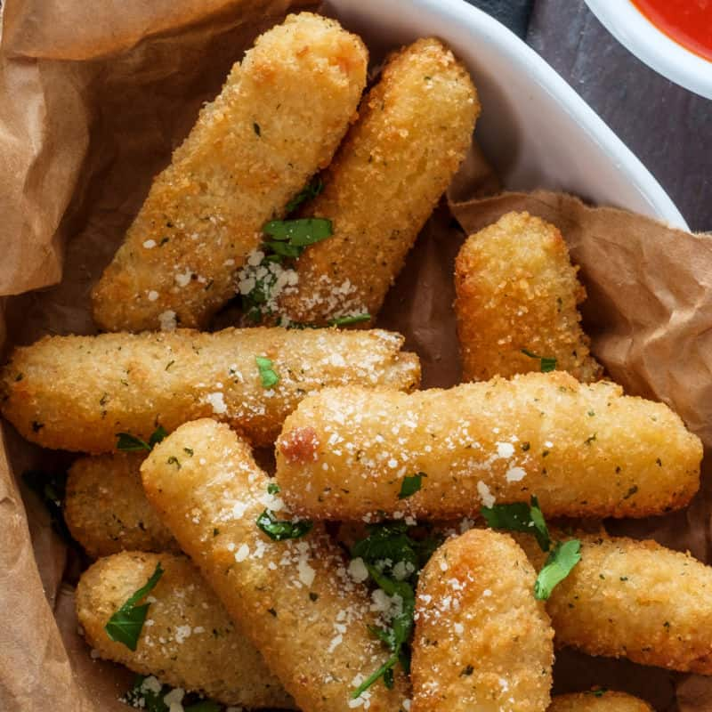

cheese sticks

Mozzarella sticks are easy to make at home. They'er deep-fried until
Golden an crispy on the out side.
There are few things more delicious than Home made
mozzarella sticks fresh from the kitchen.
Ingredients
2-3 large eggs beaten
seasoned bread crumbs
2/3 cup all-purpose flour
oil for frying
packages of cheese sticks
1/3 cup cornstarch
1/2 teaspoon garlic salt
Steps
- Whisk eggs together in small bowl.Mix bread crumbs and
garlic salt together in medium bowl.then blend cornstarch
and flour in therd bowl.
- Heat oil to 365 degrees {F} in large heavy saucepan.
- Roll cheese sticks in flour {shake off excess}.Dip
in egg. Then roll in bread crumbs.Place on plate or rack.
Repeat with remaining.
- Use a pair of tongs to lower mozzarella sticks into oil.
Fry until golden brown,about 30-40 seconds. Repeat to fry
remaining mozzarella sticks.
- ENJOY
return to main page
Return to top